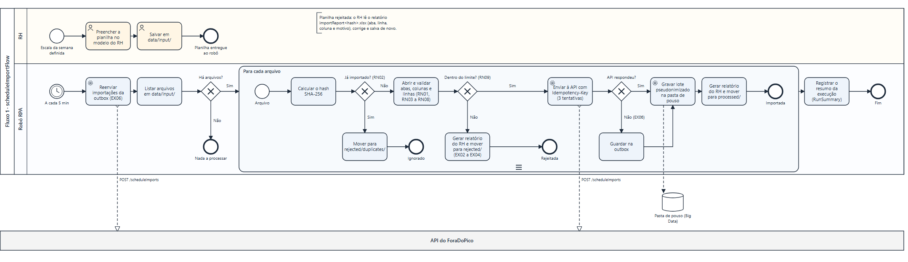
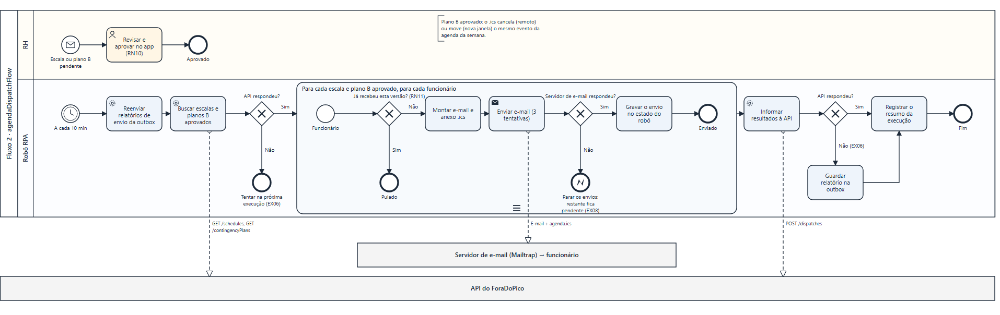
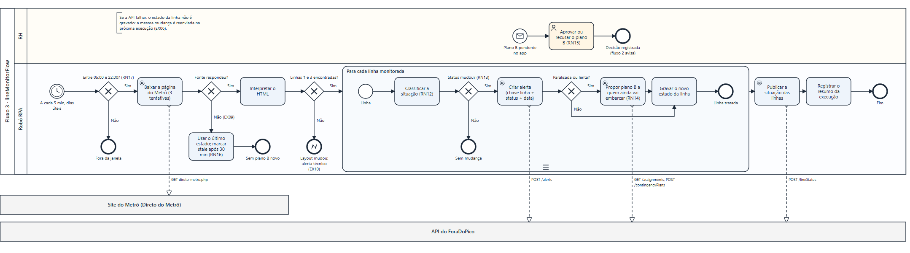
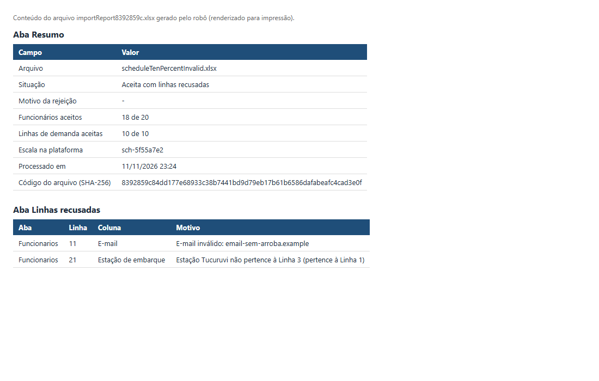
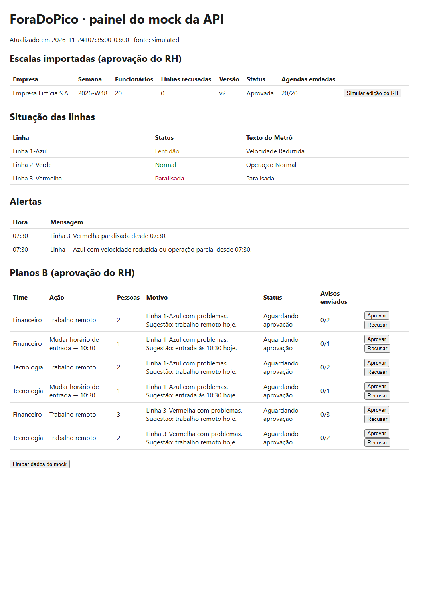
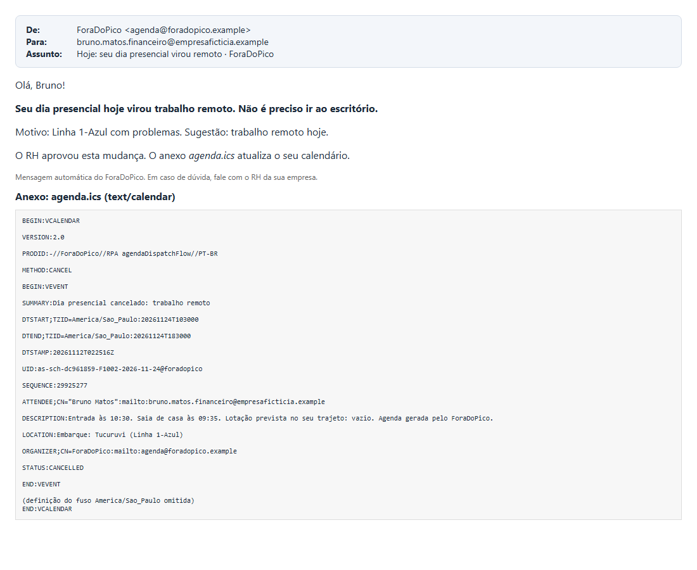
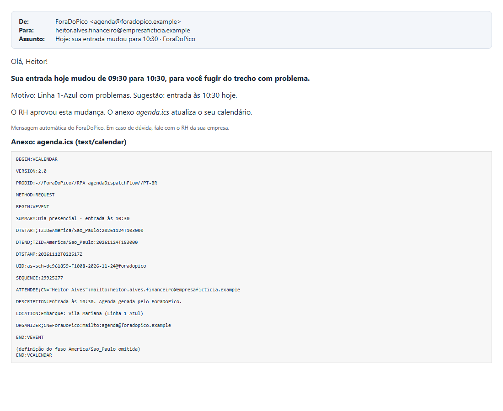

Relatório técnico da disciplina Robotic Process Automation (profs. Bruno Diniz e Cibele Ribeiro): o robô que tira do RH as tarefas manuais da escala presencial e protege o trabalhador quando a linha do metrô falha.
| Integrante | RM |
|---|---|
| Matheus Haruo | 97663 |
| João Saborido | 98184 |
| Pedro Guerra de Souza Freitas | 99526 |
| Victor Wittner | 98667 |
Repositório: github.com/haruoooo/SemestralRpa
Vídeo de demonstração: LINK_DO_VIDEO
ForaDoPico é uma plataforma B2B que monta a escala presencial das empresas híbridas fugindo dos horários de pico do Metrô de São Paulo. O cidadão beneficiado é o trabalhador CLT que vai ao escritório de metrô: ele perde quase 3 horas por dia no transporte, em trens com 8 a 10 pessoas por m² no pico. O MVP cobre as Linhas 1-Azul e 3-Vermelha.
Por trás do produto existe um trabalho operacional que hoje é manual e falha justamente quando mais importa:
| Hoje (manual) | Com o robô |
|---|---|
| O RH monta a escala em planilha, confere à mão quem vai em cada dia e manda a agenda por e-mail ou WhatsApp, um por um. | O robô importa a planilha, valida tudo, entrega à plataforma e envia as agendas aprovadas, com o convite para o calendário. |
| Ninguém acompanha a situação das linhas; o funcionário descobre a falha já na plataforma. | O robô lê a situação das linhas a cada 5 minutos e, se houver falha, propõe o plano B ao RH antes de o funcionário sair de casa. |
Objetivo: executar, sem intervenção humana além da aprovação do RH, três processos de ponta a ponta que alimentam o MVP: importar a escala, enviar as agendas e monitorar as linhas com proposta de plano B.
A automação é um robô em Python com três fluxos independentes, que rodam agendados num único processo (python -m src.main scheduler) ou um a um pela linha de comando:
| Fluxo | Gatilho | Entrada → saída |
|---|---|---|
scheduleImportFlow | A cada 5 min | Planilha .xlsx do RH em data/input/ → escala na API (pendente de aprovação), lote pseudonimizado para Big Data, relatório do RH, arquivo em processed/ ou rejected/. |
agendaDispatchFlow | A cada 10 min | Escalas e planos B aprovados na API → e-mail em português com agenda.ics para cada funcionário e confirmação de envio na API. |
lineMonitorFlow | A cada 5 min, dias úteis, 05:00 às 22:00 | Página "Direto do Metrô" → situação das linhas, alertas e propostas de plano B (pendentes de aprovação) na API. |
O passo a passo completo de cada fluxo, com as regras de negócio, exceções e cenários de teste, está no PDD (docs/processDesign.md). Os diagramas BPMN 2.0 abaixo são gerados a partir dele por tools/bpmnDiagrams.py. Os arquivos .bpmn em docs/bpmn/ abrem no bpmn.io e no Camunda Modeler.
Notação usada: uma raia para o RH e outra para o robô; subprocessos de múltiplas instâncias (três traços) para as repetições; losangos com X para as decisões; envelopes tracejados (fluxos de mensagem) para as integrações com a API, o site do Metrô e o servidor de e-mail.

scheduleImportFlow: importação e validação da planilha do RH.
agendaDispatchFlow: envio das agendas e dos avisos de plano B aprovados.
lineMonitorFlow: monitoramento das linhas e proposta de plano B.| Necessidade | Tecnologia | Por quê |
|---|---|---|
| Linguagem do robô | Python 3.13 | Mesma linguagem da API (FastAPI), de Big Data e de IA do grupo. Código versionado e testável, diferente de um fluxo só visual. |
| Arquitetura | Ports & Adapters (hexagonal) | As regras não conhecem planilha, site, API nem e-mail. Cada tecnologia é um adaptador trocável por variável de ambiente (API real, mock ou arquivo; site real ou simulado; SMTP ou console), o que permite testar sem rede e demonstrar falhas. |
| Leitura da planilha | openpyxl | Lê .xlsx sem Excel instalado e sem pandas. |
| Leitura do site | httpx + BeautifulSoup | Timeout explícito e leitura de uma única página pública. O robô se identifica com User-Agent próprio e faz uma requisição a cada 5 min. |
| Resiliência | tenacity | 3 tentativas com backoff exponencial (esperas de 2 s e 4 s). |
| Agenda | icalendar (RFC 5545) | O .ics abre no Google, no Outlook e no celular. O UID do evento é o assignmentId, então um plano B cancela ou move o mesmo evento. |
| smtplib + Mailtrap (sandbox) | Os e-mails ficam numa caixa de testes, sem atingir pessoas reais (LGPD). | |
| Estado do robô | SQLite | Arquivo único, sem servidor: hashes processados, último status das linhas, envios feitos e outbox. |
| Agendamento | APScheduler | Roda os três fluxos num só processo, sem sobrepor execuções. |
| Mock da API | FastAPI + uvicorn | Mesmo contrato OpenAPI da API real, com um painel que mostra a integração e simula a aprovação do RH. |
| Testes | pytest | 81 testes automatizados de sucesso, decisão e falha. |
O robô usa decisões (losangos do BPMN) e repetições sobre coleções (subprocessos: cada arquivo, cada linha da planilha, cada funcionário, cada linha do metrô, cada time afetado).
| Regra | Descrição |
|---|---|
| RN01 | A planilha precisa ter as abas Semana, Demanda, Funcionarios e Janelas, com todas as colunas. Acentos e maiúsculas no nome são ignorados. |
| RN02 | Arquivo com hash SHA-256 já processado é ignorado e vai para rejected/duplicates/. |
| RN03 a RN08 | Para cada linha: campos obrigatórios e tipos (data, inteiro, e-mail, HH:MM); matrícula duplicada (mantém a primeira); estação existente e da linha informada; janela de entrada existente; mínimo ≤ máximo ≤ funcionários válidos do time; datas em dias úteis da semana. |
| RN09 | Se mais de 20% das linhas de Funcionarios forem inválidas, ou qualquer linha de Demanda for inválida, o arquivo inteiro é rejeitado. Abaixo disso, as linhas válidas seguem e as inválidas vão para o relatório do RH. |
| RN10 e RN11 | Só é enviada a escala aprovada pelo RH. Cada funcionário recebe cada versão uma única vez; se o RH editar, a versão muda e a agenda é reenviada como "Agenda atualizada". |
| RN12 | Classificação do texto do Metrô: "Operação Normal" → normal; "Velocidade Reduzida" ou "Operação Parcial" → degraded; "Paralisada" → stopped; "Operação Encerrada" → closed (sem plano B); outro texto → unknown (aviso, sem plano B). |
| RN13 | Só há alerta quando o status muda. A chave linha + status + data impede duplicatas. |
| RN14 | Plano B: stopped → trabalho remoto; degraded → próxima janela de entrada permitida mais tarde (ou remoto, se não houver). Só entra quem ainda não passou do horário de entrada. Uma proposta por time e ação. |
| RN15 | O plano B é sempre criado como pendente de aprovação. |
| RN16 e RN17 | Com a fonte fora do ar há mais de 30 min, os dados ficam marcados como desatualizados e nenhum plano B novo é gerado. O monitor só roda em dias úteis, das 05:00 às 22:00. |
| RN18 | Intervalo mínimo entre e-mails e limite opcional por execução, para respeitar o provedor; o restante sai na execução seguinte. |
Toda falha externa nasce num adaptador e vira uma exceção conhecida, que o fluxo trata. Nenhuma falha é silenciosa: cada uma gera log, muda o status da execução e define o código de saída (0 = sucesso, 2 = parcial, 1 = falha).
| Código | Situação | Tratamento |
|---|---|---|
| EX01 | Pasta de entrada inexistente | Cria a pasta, registra aviso e segue. |
| EX02 | Arquivo corrompido ou que não é .xlsx | Move para rejected/ e gera relatório do RH. Os outros arquivos continuam sendo processados. |
| EX03 e EX04 | Aba ou coluna faltando; linhas inválidas | Relatório com aba, linha, coluna e motivo, em português. |
| EX05 | Dados duplicados (arquivo, matrícula, alerta, plano, e-mail) | Hash do arquivo, chaves de deduplicação e registro de envios por versão. |
| EX06 | API fora do ar (timeout, conexão, 5xx) | 3 tentativas com backoff. Depois disso, a importação e o relatório de envios vão para a outbox, reenviada no início da execução seguinte. No monitor, o estado da linha não é gravado, e a mesma mudança é reenviada. Nada se perde. |
| EX07 | API recusa os dados (4xx) | Não repete a tentativa; registra a resposta e move o arquivo para rejected/. |
| EX08 | Servidor de e-mail fora do ar | 3 tentativas. Depois, para os envios daquela execução; o restante fica pendente para a próxima. Endereço recusado não é reenviado até o RH corrigir. |
| EX09 e EX10 | Site do Metrô fora do ar ou com layout alterado | Usa o último estado (RN16). Se o layout mudou, registra alerta técnico e não gera plano B com dado duvidoso. |
| EX11 | Erro inesperado | Capturado no fluxo, registrado com stack trace e sem dados pessoais. A execução sai com código 1, e o agendador continua rodando. |
Cada execução grava em logs/robotYYYYMMDD.log, no formato JSON Lines, com os campos timestamp, level, runId, flow, step (o número da etapa no PDD), event, itemRef, message e data. A execução termina sempre com um RunSummary que traz total, sucessos, falhas, itens pulados e duração.
Os logs ficam em inglês, para a equipe técnica; tudo o que vai ao RH e ao funcionário fica em português. O funcionário aparece apenas como employeeRef: um hash da matrícula com salt secreto. A amostra completa de uma execução real está em logs/samples/robotSample.log.
{"timestamp": "2026-11-11T23:24:33-03:00", "level": "WARNING", "runId": "si-20261111-232433-8ce2", "flow": "scheduleImportFlow", "step": "4.4", "event": "RowRefused", "itemRef": "file8392859c", "message": "Refused Funcionarios row 11 column E-mail"}
{"timestamp": "2026-11-11T23:24:51-03:00", "level": "WARNING", "runId": "si-20261111-232439-e5b1", "flow": "scheduleImportFlow", "step": "4.6", "event": "ImportQueued", "itemRef": "filec04f4cc7", "message": "API unavailable after retries; import saved to the outbox for the next run (EX06): POST /scheduleImports unreachable: ConnectError"}
{"timestamp": "2026-11-11T23:25:09-03:00", "level": "ERROR", "runId": "ad-20261111-232456-6152", "flow": "agendaDispatchFlow", "step": "3.3", "event": "MailServerUnavailable", "itemRef": null, "message": "Mail server unavailable after retries; remaining e-mails stay pending for the next run (EX08): SMTP unreachable: ConnectionRefusedError"}
{"timestamp": "2026-11-11T23:25:13-03:00", "level": "INFO", "runId": "lm-20261111-232513-2706", "flow": "lineMonitorFlow", "step": "5.5", "event": "ContingencyPlanProposed", "itemRef": "line1", "message": "Plan B plan-85bd6d67 (remoteWork) proposed for team Financeiro, pending HR approval (RN15)", "data": {"employeeRefs": ["9c69610aba32", "ab405dd7bffe"]}}
{"timestamp": "2026-11-11T23:25:13-03:00", "level": "INFO", "runId": "lm-20261111-232513-2706", "flow": "lineMonitorFlow", "step": "7", "event": "RunSummary", "message": "Line monitor finished with status success", "data": {"status": "success", "itemsTotal": 2, "itemsSucceeded": 2, "itemsFailed": 0, "itemsSkipped": 0, "durationSeconds": 0.048, "details": {"alertsCreated": 2, "plansProposed": 6, "stale": false, "source": "simulated"}}}
O relatório do RH (importReport<hash>.xlsx) é gerado para cada planilha, aceita ou rejeitada, e é a evidência do processamento para quem não lê logs:

O robô é cliente da API única do ForaDoPico e segue um contrato OpenAPI 3.1 (docs/integrations/secureDevOpsCloud/productApiContract.yaml). Como a API real é construída em paralelo por outro integrante, o repositório traz um mock com o mesmo contrato. Trocar para a API real é mudar duas variáveis no .env (PRODUCT_API_URL e PRODUCT_API_KEY).
| Integração | O que é consumido e por quem |
|---|---|
API: POST /scheduleImports (idempotente pelo hash do arquivo) | Escala que o RH aprova na tela "Montar a semana". |
API: GET /schedules, GET /contingencyPlans, POST /dispatches | Status "agenda enviada" de cada funcionário no app. |
API: POST /lineStatus, POST /alerts | Tela "Alertas" do app e versão gratuita. |
API: GET /assignments, POST /contingencyPlans | Tela de plano B, onde o RH aprova ou recusa. |
Arquivo estruturado: landingZone/chegada/schedule/*.json | Camada Bronze de Big Data: lote pseudonimizado, sem nome e sem e-mail (docs/integrations/bigDataDataIntegration/). |
E-mail + .ics | Funcionário: agenda no calendário pessoal. |
Os documentos de entrega para as outras disciplinas estão em docs/integrations/, um por disciplina: o contrato e o guia de deploy para Secure DevOps & Cloud, e o formato e o dicionário de dados para Big Data.


.ics usa METHOD:CANCEL com o mesmo UID da agenda e remove o compromisso.
81 testes automatizados (pytest -v, relatório em tests/evidence/pytestReport.txt) cobrem as regras, os três fluxos, a leitura do HTML real do Metrô e a codificação dos e-mails, com adaptadores falsos e sem rede. A execução de ponta a ponta (bash tools/collectEvidence.sh) roda 20 comandos contra o mock, com falhas provocadas, e gera os logs, os prints e o roteiro tests/evidence/scenarioRun.txt. O mapa completo cenário → teste está em tests/README.md.
| Tipo | Cenário | Resultado obtido |
|---|---|---|
| Sucesso | Planilha válida com 2 times e 20 funcionários | Enviada à API, lote gravado para Big Data, arquivo em processed/. |
| Sucesso | Escala aprovada pelo RH | 20 e-mails com .ics e 20/20 confirmados na API. |
| Sucesso | Leitura real do site do Metrô | 7 linhas lidas; Linhas 1 e 3 registradas. |
| Decisão | 2 linhas inválidas em 20 (10%) | 18 aceitas e relatório com as 2 recusadas e o motivo. |
| Decisão | 30% de linhas inválidas | Arquivo inteiro rejeitado (RN09), sem chamar a API. |
| Decisão | Mesma versão da escala de novo / versão 2 | Nenhum reenvio / reenvio como "Agenda atualizada". |
| Decisão | Linha 3 paralisada e Linha 1 lenta às 07:30 | 2 alertas e 6 planos B: remoto para a Linha 3, entrada às 10:30 ou remoto para a Linha 1. Quem já tinha embarcado ficou de fora. |
| Decisão | Mesmo status às 07:35 / leitura às 23:30 | Sem alerta novo (RN13) / execução skipped (RN17). |
| Falha | Arquivo corrompido, aba faltando, arquivo repetido | Rejeitados com relatório; cópia em rejected/duplicates/. |
| Falha | API desligada durante a importação | 3 tentativas, outbox, entrega automática na execução seguinte. |
| Falha | Servidor de e-mail fora do ar | 3 tentativas, execução partial, todos enviados na execução seguinte. |
| Falha | Site do Metrô fora do ar | Último estado usado; às 08:20, dados marcados como desatualizados e nenhum plano B. |
.ics ia sem charset, o que corrompia os acentos; e assuntos longos com acento chegavam quebrados ao Mailtrap por um comportamento do Python ao dobrar cabeçalhos. Todos ganharam testes de regressão.employeeRef). Nas linhas recusadas, o log registra só aba, linha e coluna; o valor fica no relatório do RH. Três testes automatizados verificam isso..env, fora do Git. O .env.example não tem valores..example. Os e-mails reais ficam presos no sandbox do Mailtrap.a***@dominio).README.md, docs/processDesign.md (PDD), docs/bpmn/, docs/architecture.md, docs/integrations/, tests/README.md.